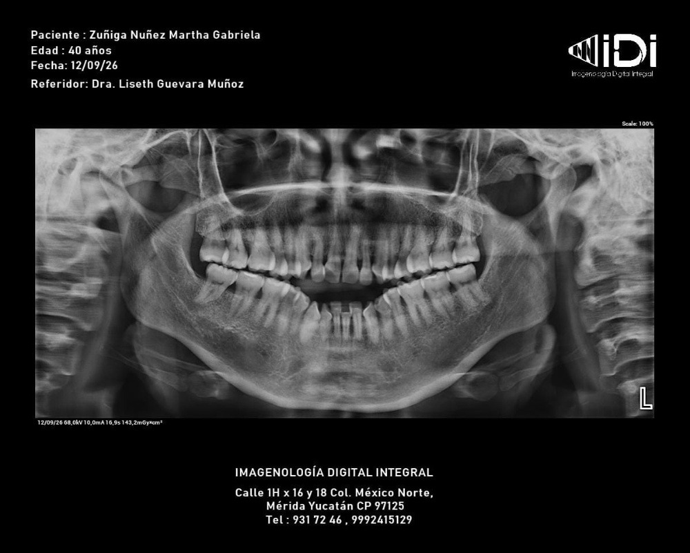
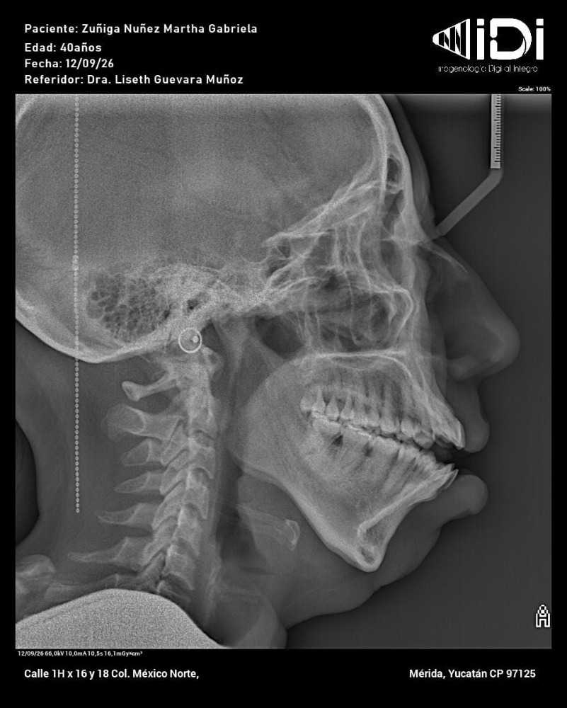
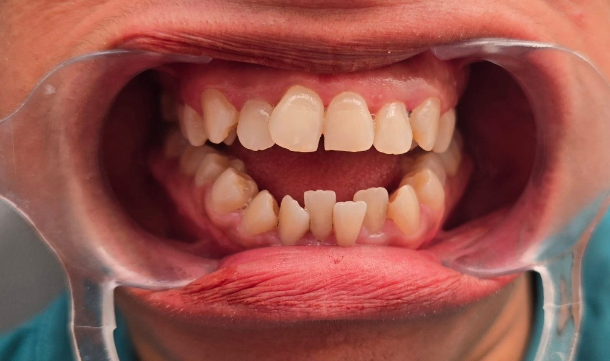
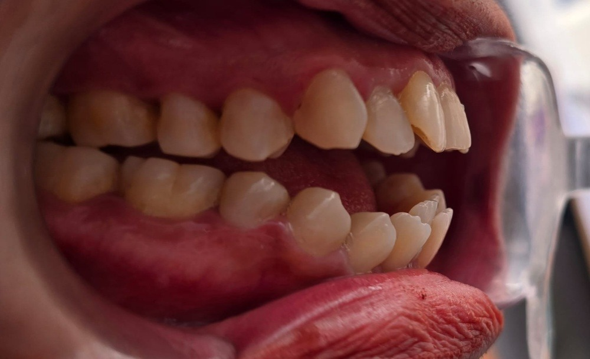

Paciente: Zúñiga Núñez Martha Gabriela
Edad: 40 años Fecha Estudio: 12/09/2026 Doctora: Dra. Liseth Guevara Muñoz Centro Rx: Imagenología Digital Integral (IDI Mérida)
Clase II Dolicofacial (Hiperdivergente)
Rotación mandibular horaria, perfil convexo, ramas mandibulares cortas.
Mordida Abierta Anterior (-4.5 mm)
De OD 13 a 23 con interposición lingual activa y deglución atípica.
Ausencia previa de 14, 24, 34 y 44
Apiñamiento anteroinferior (-5.5 mm) y terceros molares 18, 28, 38, 48 presentes.
Acortamiento Radicular Anterior
Prohibida extrusión anterior pura; cerrar espacio con intrusión molar guiada.
Registro Fotográfico y Radiográfico del Paciente (Entrada de IA Vision)
Estudios clínicos de referencia analizados por Gemini Vision multimodal




Odontograma Clínico y Biomecánico por Cuadrantes (Sistema FDI)
Haz clic en cualquier diente para inspeccionar su diagnóstico, milímetros de IPR y movimientos programados.
Incisivo Central Inferior Derecho
Diagnóstico y Estado: Apiñamiento severo y lingualizado
Stripping (IPR) Requerido: 0.3 mm
Movimiento Biomecánico Programado
Desrotación y Vestibularización controlada
Análisis Técnico Radiográfico y Cefalométrico (IA Vision)
Normas Clínicas Estándar| Parámetro / Estructura | Hallazgo del Caso | Norma | Implicación Biomecánica |
|---|---|---|---|
| Overbite (Sobremordida Vertical) | -4.5 mm (Mordida Abierta) | +2.0 mm a +2.5 mm | Requiere intrusión molar superior con TADs para autorrotar la mandíbula en sentido antihorario. |
| Patrón Vertical (FMA / GoGn-SN) | ~31° / 38° (Hiperdivergente) | 25° / 32° | Evitar cualquier mecánica extrusiva posterior (contraindicados elásticos Clase II convencionales). |
| Inclinación Incisiva (IMPA / 1-SN) | Biprotrusión / Proinclinación | 90° / 102° | Alinear mediante IPR (Stripping) para retroinclinar y ganar sobremordida (efecto puente levadizo). |
| Discrepancia Oseodentaria Inf. | -5.5 mm (Apiñamiento 33-43) | 0 mm | IPR selectivo de 0.3-0.4 mm por contacto de canino a canino inferior + leve distalización post-exo 38/48. |
| Proporción Corona-Raíz (Panorámica) | 1:1.1 en Incisivos + Pérdida ósea | 1:1.5 a 1:2 | Fuerzas ultra ligeras y continuas (<60 g en anteriores). Control periapical radiográfico cada 6 meses. |
Tratamientos Adicionales Requeridos
- Periodoncia Previa (Fase 0): Detartraje ultrasónico y profilaxis profunda anteroinferior antes del cementado.
- Terapia Miofuncional + Espuelas: Reeducación lingual + espuelas linguales (bondable tongue spurs) en caras linguales/palatinas.
- Cirugía Maxilofacial: Exodoncia de terceros molares (18, 28, 38 y 48) para eliminar efecto cuña posterior.
- Anclaje Esquelético: 2 Microtornillos infracigomáticos (IZC) entre 6 y 7 superiores + ATP separado 3 mm del paladar.
Matriz de Riesgos Clínicos y Mitigación
Opciones de Tratamiento Recomendadas
Opción 1 (Gold Standard): Autoligado Pasivo + Microtornillos (TADs)
RecomendadaAparatología: Brackets de Autoligado Pasivo Slot .022" (Prescripción MBT torque estándar) + 2 TADs IZC superiores + ATP palatino elevado.
Ventajas: Menor fricción, control vertical tridimensional absoluto con intrusión molar predecible, menor estrés sobre raíces cortas.
Limitaciones: Mayor costo por colocación de microtornillos y aditamentos quirúrgicos.
Opción 2: Tratamiento Híbrido (Alineadores Transparentes + TADs)
AlternativaAparatología: Alineadores (Invisalign Comprehensive) con ataches optimizados de intrusión molar posterior + TADs con botones palatinos.
Ventajas: Máxima estética, excelente control de intrusión molar posterior por grosor del plástico (efecto bite-block).
Limitaciones: 100% dependiente de la cooperación del paciente (22 horas/día); requiere disciplina rigurosa.
Secuencia Biomecánica y Movimientos Mes con Mes (18 Meses)
Hoja de ruta clínica detallada para el expediente y citas en sillón
Dra. Liseth Guevara Muñoz
Especialista en Ortodoncia y Ortopedia Maxilar — Cédula Profesional
Clínica Dra. Liseth Guevara • Mérida, Yucatán
Martha Gabriela Zúñiga Núñez
Firma de Consentimiento Informado del Paciente / Tutor
Aceptación de Plan Biomecánico y Riesgos Asociados